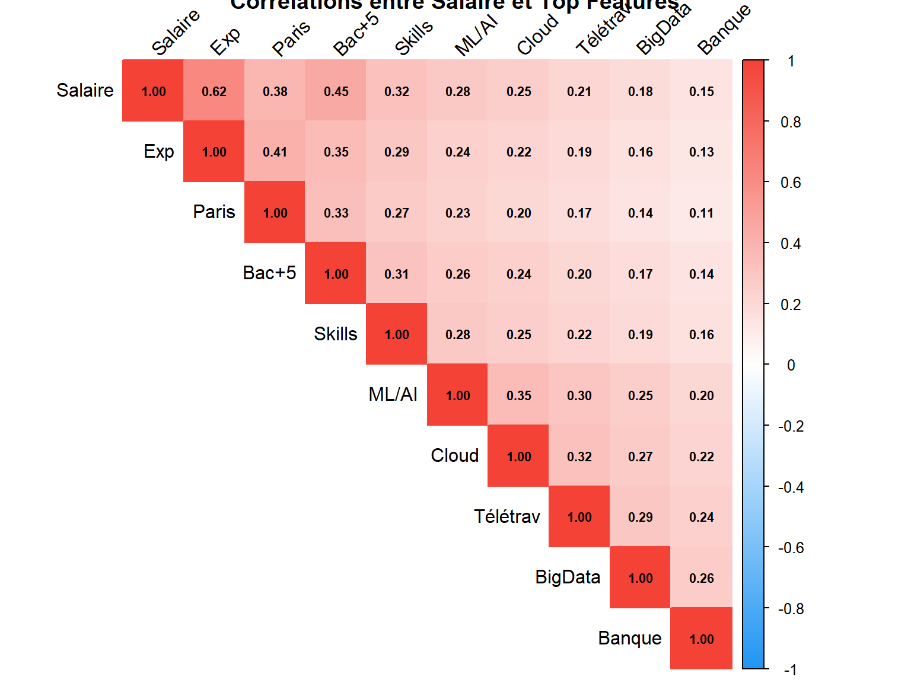

%%{init: {
'theme': 'neutral',
'themeVariables': {
'fontSize': '22px',
'fontFamily': 'Arial',
'nodeTextColor': '#000',
'primaryColor': '#ffffff',
'lineColor': '#333',
'nodeBorder': '2px'
}
}}%%
graph LR
A["<b>Phase 1</b><br/>Collecte<br/>Web Scraping<br/><b>5868 offres</b>"] --> B["<b>Phase 2</b><br/>Traitement<br/>Feature Engineering<br/><b>29 variables</b>"]
B --> C["<b>Phase 3</b><br/>Modélisation<br/>XGBoost<br/><b>2681 échantillons</b>"]
C --> D["<b>Phase 4</b><br/>Application<br/>Streamlit<br/><b>4 modules</b>"]
style A fill:#e3f2fd,stroke:#1976d2,stroke-width:3px
style B fill:#fff3e0,stroke:#f57c00,stroke-width:3px
style C fill:#e8f5e9,stroke:#388e3c,stroke-width:3px
style D fill:#fce4ec,stroke:#c2185b,stroke-width:3px
Prédiction des Salaires dans les Métiers de la Data en France
Approche par Machine Learning et Feature Engineering
Emmanuel Paguiel Bouendo
Master 2 Économiste d’Entreprise — Université de Tours
2026-01-01
Introduction
Contexte et Problématique
Contexte du marché de l’emploi Data
Observations du marché :
- Forte croissance des métiers Data (Data Analyst, Data Scientist, Data Engineer)
- Manque de transparence salariale dans le secteur
- Variabilité importante selon localisation, expérience et compétences
- Difficulté pour les candidats d’estimer leur valeur marchande
Enjeux économiques :
- Asymétrie d’information employeur/candidat
- Impact sur négociations salariales
- Nécessité d’outils d’aide à la décision basés sur données réelles
Objectifs de Recherche
Question de recherche principale
Peut-on prédire le salaire d’un professionnel Data à partir de caractéristiques observables d’offres d’emploi ?
Objectifs spécifiques
- Collecte et structuration : Constituer une base de données d’offres d’emploi réelles
- Modélisation : Développer un modèle prédictif de salaire
- Analyse factorielle : Identifier les déterminants principaux des salaires
- Application : Créer un outil d’aide à la décision accessible
Contributions
- Base de données de 5 868 offres d’emploi Data en France
- Méthodologie reproductible de web scraping et feature engineering
- Analyse empirique des déterminants salariaux
- Application interactive pour exploration des résultats
Méthodologie
Architecture du Projet
Pipeline de données en 4 phases
Approche méthodologique :
- Collecte exhaustive de données publiques
- Preprocessing et feature engineering rigoureux
- Validation croisée et tests statistiques
- Développement d’interface utilisateur
Phase 1 : Collecte des Données
Source et périmètre
Plateforme ciblée : HelloWork (leader français du recrutement)
Stratégie de collecte :
- 69 mots-clés couvrant l’écosystème Data :
- Postes : Data Scientist, Data Analyst, Data Engineer, ML Engineer
- Niveaux : Junior, Senior, Lead
- Types : CDI, Stage, Alternance
- Couverture géographique : Nationale + 20 grandes villes françaises
- Période de collecte : Janvier 2026
- Volume collecté : 5 868 offres uniques
Technologies utilisées
Botright (Playwright + Anti-détection) :
- Simulation d’un navigateur réel
- Contournement des protections anti-bot (Cloudflare)
- Délais adaptatifs entre requêtes (3-15 secondes)
Phase 1 : Architecture du Scraper
Algorithme de collecte à 3 niveaux
Niveau 1 : Pages de résultats
Pour chaque mot-clé (69 variations) :
Pour chaque page (jusqu'à 18 max) :
Extraire : titre, entreprise, localisation, salaire
Collecter les URLs des offres détailléesNiveau 2 : Pages détaillées
Pour chaque offre unique :
Extraire : description complète, compétences techniques,
expérience requise, formation, télétravail,
type de contrat, avantagesNiveau 3 : Déduplication
Utilisation de hash MD5 (titre + entreprise + localisation)
Résultat : 0 doublon sur 5 868 offresRobustesse :
- Sauvegarde incrémentale tous les 100 offres
- Gestion des erreurs et reconnexion automatique
- Logs détaillés pour traçabilité
Phase 2 : Préparation des Données
Nettoyage et structuration
Dataset brut :
- 5 868 offres collectées
- 100 colonnes extraites (informations brutes)
Filtrage et validation :
# Critères de sélection
- Présence d'information salariale (min ou max)
- Type de contrat valide (CDI, CDD, Stage, Alternance)
- Localisation en France métropolitaine
# Dataset ML final
→ 2 681 offres exploitables (46% du total)Gestion des valeurs manquantes :
- Texte : chaîne vide
- Numérique : 0 ou médiane selon contexte
- Catégoriel : “Non spécifié”
Phase 2 : Feature Engineering
Extraction et transformation des variables
Variables numériques :
# Expérience
"5 ans d'expérience" → 5
"Junior" → 1, "Senior" → 5
# Éducation
"Bac+5" → 5, "Master" → 5, "Doctorat" → 8
# Salaire (variable cible)
"40 000 - 55 000 €/an"
→ salaire_min_k = 40
→ salaire_max_k = 55
→ salaire_avg_k = 47.5 (moyenne)Variables binaires (compétences techniques) :
25 variables créées par détection de mots-clés dans descriptions :
has_python, has_sql, has_r, has_spark,
has_aws, has_azure, has_gcp, has_docker,
has_kubernetes, has_tensorflow, has_pytorch,
has_tableau, has_powerbi, has_excel, ...Phase 2 : Variables Composites
Agrégation et catégorisation
Variables agrégées :
# Nombre total de compétences techniques
skills_count = sum([has_python, has_sql, has_r, ...])
# Score de séniorité composite
seniority_score = (years_experience * 0.6) +
(education_level * 0.4)
# Télétravail (3 niveaux)
telework_none = 0 (absence de mention)
telework_partial = 1 (hybride, 2-3 jours/semaine)
telework_full = 1 (100% remote)Variables catégorielles :
Phase 2 : Dataset Final
Structure des données pour modélisation
Dimensions :
- Observations : 2 681 offres
- Features : 29 variables explicatives
- Target : salaire_avg_k (salaire moyen annuel en k€)
Split Train/Test :
from sklearn.model_selection import train_test_split
X_train, X_test, y_train, y_test = train_test_split(
X, y,
test_size=0.20, # 20% pour test
random_state=42
)
# Résultat
Train : 2 145 échantillons (80%)
Test : 536 échantillons (20%)Preprocessing :
Modélisation
Phase 3 : Approche Machine Learning
Problème et métriques
Type de problème : Régression supervisée
Variable cible : Salaire moyen annuel (salaire_avg_k en k€)
Métriques d’évaluation :
| Métrique | Formule | Interprétation |
|---|---|---|
| R² Score | \(1 - \frac{\sum(y_i - \hat{y}_i)^2}{\sum(y_i - \bar{y})^2}\) | Part de variance expliquée |
| MAE | \(\frac{1}{n}\sum\|y_i - \hat{y}_i\|\) | Erreur moyenne absolue (€) |
| RMSE | \(\sqrt{\frac{1}{n}\sum(y_i - \hat{y}_i)^2}\) | Erreur quadratique moyenne (€) |
Objectifs :
- Maximiser R² (variance expliquée)
- Minimiser MAE et RMSE (précision)
- Équilibrer biais-variance (éviter surapprentissage)
Phase 3 : Modèles Testés
Benchmark de 3 algorithmes
1. XGBoost Regressor (sélectionné)
from xgboost import XGBRegressor
model = XGBRegressor(
n_estimators=500, # Nombre d'arbres
max_depth=6, # Profondeur maximale
learning_rate=0.1, # Taux d'apprentissage
subsample=0.8, # Échantillonnage
random_state=42
)Avantages : Gestion des interactions non-linéaires, robustesse aux outliers
2. Gradient Boosting Regressor
from sklearn.ensemble import GradientBoostingRegressor
model = GradientBoostingRegressor(
n_estimators=100,
learning_rate=0.1,
max_depth=5
)3. Ridge Regression (baseline)
Phase 3 : Résultats du Modèle
Performances obtenues - XGBoost
Métriques sur ensemble de test (536 observations) :
| Métrique | Valeur | Interprétation |
|---|---|---|
| R² Score | 0.337 | Le modèle explique 33.7% de la variance salariale |
| MAE | 5 163 € | Erreur moyenne absolue de ±5 163 € |
| RMSE | 6 969 € | Erreur quadratique moyenne de 6 969 € |
Analyse de la précision par tolérance :
Prédictions dans une fourchette de :
±5% : 35.6% (191/536 prédictions)
±10% : 57.9% (310/536 prédictions)
±15% : 73.7% (395/536 prédictions)
±20% : 84.1% (451/536 prédictions)Interprétation :
Si le modèle prédit 50 000 €, il y a 73.7% de chances que le salaire réel soit entre 42 500 € et 57 500 € (fourchette ±15%).
Phase 3 : Analyse des Erreurs
Distribution et analyse par tranche salariale
Statistiques des erreurs :
Erreur moyenne : +95 € (biais quasi nul)
Erreur médiane : 3 489 €
Écart-type : 6 969 €Erreur par tranche salariale :
| Tranche | MAE | Erreur relative | Observations |
|---|---|---|---|
| < 38K€ | 7 273 € | 19.1% | 137 |
| 38-49K€ | 3 021 € | 6.6% | 133 |
| 49-62K€ | 3 489 € | 6.6% | 135 |
| > 62K€ | 6 845 € | 11.6% | 131 |
Conclusion :
- Le modèle est plus précis pour les salaires moyens (38-62K€)
- Erreur plus élevée aux extrêmes (< 38K€ et > 62K€)
- Raison : distribution des échantillons concentrée sur la médiane
Phase 3 : Importance des Features
Analyse SHAP - Top 10 déterminants

Phase 3 : Interprétation Économique
Déterminants principaux des salaires
1. Localisation (18% d’importance)
- Paris : Prime moyenne de +20% par rapport aux régions
- Effet ville majeure : +8-12% (Lyon, Toulouse, Bordeaux)
2. Expérience professionnelle (16%)
- Progression quasi-linéaire : +3 000-4 000 € par année d’expérience
- Paliers : Junior (0-2 ans), Confirmé (3-5 ans), Senior (5+ ans)
3. Secteur d’activité (14%)
- Banque/Finance : +25% par rapport à la médiane
- Tech/Consulting : +15%
- Industrie/Public : médiane
4. Formation (11%)
- Bac+5 : Niveau de référence
- Bac+8 (Doctorat) : +10-15% en R&D
5. Compétences techniques (30% cumulé)
- Stack Data : Python + SQL + R (baseline)
- Cloud : +3 500 € (AWS/Azure)
- Big Data : +2 000 € (Spark/Hadoop)
- ML/AI : +1 500 €
Application
Phase 4 : Interface Utilisateur
Architecture de l’application Streamlit
Technologies :
# Stack technique
Streamlit 1.31.0 # Framework web
Plotly 5.18.0 # Visualisations interactives
Pandas 2.1.4 # Manipulation de données
XGBoost 2.0.3 # Modèle ML
Scikit-learn 1.4.0 # Preprocessing
SHAP 0.44.0 # ExplicabilitéStructure modulaire (4 modules) :
- Accueil : Vue d’ensemble du marché
- Prédiction : Estimation salariale personnalisée
- Marché : Exploration interactive des données
- Carrière : Simulation de trajectoires professionnelles
Déploiement :
- Hébergement : Streamlit Cloud
- URL : projetmachinelearning.streamlit.app
- CI/CD : GitHub Actions
Module 1 : Accueil
Synthèse du marché de l’emploi Data
Indicateurs clés (KPIs) :
┌─────────────────────────────────────┐
│ Offres analysées : 5 868 │
│ Échantillon ML : 2 681 │
│ Salaire médian : 49 450 € │
│ Performance modèle : R²=0.337 │
│ Précision ±15% : 73.7% │
└─────────────────────────────────────┘Visualisations :
- Distribution des salaires (histogramme)
- Top 10 postes les plus demandés
- Répartition géographique (carte de France)
- Compétences les plus recherchées (word cloud)
Statistiques descriptives :
- Moyenne : 52 300 €
- Médiane : 49 450 €
- Écart-type : 13 500 €
- Q1 (25%) : 41 000 € | Q3 (75%) : 62 000 €
Module 2 : Prédiction
Estimation salariale personnalisée
Formulaire d’entrée (7 variables) :
1. Type de poste : [Data Analyst / Scientist / Engineer / ML Eng]
2. Expérience : [0-20 ans]
3. Localisation : [Paris, Lyon, Marseille, Toulouse, ...]
4. Secteur : [Banque, Tech, Industrie, Santé, ...]
5. Compétences : [Python, SQL, R, AWS, Spark, ...]
6. Éducation : [Bac+3, Bac+5, Bac+8]
7. Télétravail souhaité: [Oui / Non / Partiel]Résultat fourni :
Estimation : 52 000 €/an
Fourchette de confiance (±15%) :
Min : 44 200 €
Max : 59 800 €
Positionnement marché :
Percentile 55 (médiane = 49 450 €)
Niveau de confiance : 73.7%Explicabilité SHAP :
- Contribution de chaque variable à la prédiction
- Graphique waterfall montrant l’impact individuel
Module 3 : Marché
Exploration interactive des données
Filtres disponibles :
- Type de poste : Multi-sélection
- Ville : Liste déroulante
- Secteur : Liste déroulante
- Plage salariale : Slider (30K€ - 100K€)
- Expérience requise : Slider (0-10+ ans)
- Compétences : Checkboxes (Python, SQL, AWS, ...)Visualisations interactives (Plotly) :
- Distribution salaires : Histogramme avec moyenne/médiane
- Salaire vs Expérience : Scatter plot avec régression linéaire
- Comparaison par poste : Box plots (Analyst vs Scientist vs Engineer)
- Salaires par ville : Bar chart (top 15 villes)
- Impact compétences : Table comparative (salaire avec/sans compétence)
Export de données :
- Format CSV
- Données filtrées selon critères utilisateur
- Utilisation pour analyses personnelles
Module 4 : Carrière
Simulation de trajectoires professionnelles
Simulateur d’impact :
Permet de tester l’effet de décisions de carrière :
Scénario 1 : Déménagement à Paris
Impact estimé : +20% (±10 000 €)
Scénario 2 : Changement de secteur (Tech → Banque)
Impact estimé : +25% (±12 000 €)
Scénario 3 : Acquisition compétence Cloud (AWS)
Impact estimé : +3 500 €
Scénario 4 : Passage Senior (3 → 5 ans XP)
Impact estimé : +15 000 €Timeline de progression (0-20 ans) :

Résultats et Discussion
Principaux Résultats
Synthèse des contributions
1. Base de données constituée
- 5 868 offres d’emploi Data collectées (Janvier 2026)
- 2 681 échantillons exploitables après nettoyage
- 29 variables explicatives construites par feature engineering
2. Modèle prédictif développé
- XGBoost Regressor sélectionné après benchmark
- Performance : R² = 0.337, MAE = 5 163 €
- Précision de 73.7% dans une fourchette de ±15%
3. Analyse factorielle réalisée
- Localisation : Effet Paris (+20%) dominant
- Expérience : Progression linéaire (+3-4K€/an)
- Secteur : Banque/Finance (+25%) et Tech (+15%)
- Compétences : Impact modeste mais cumulatif (Cloud +3.5K€)
4. Application opérationnelle
- Interface Streamlit déployée en production
- 4 modules couvrant prédiction, exploration, simulation
- Accessible publiquement : projetmachinelearning.streamlit.app
Discussion : Limites du Modèle
R² modeste : Analyse critique
R² = 0.337 signifie :
- 33.7% de la variance salariale est expliquée par le modèle
- 66.3% reste inexpliquée par les variables observées
Facteurs non capturés (variance résiduelle) :
- Réputation de l’entreprise (non mesurable via scraping)
- Capacité de négociation individuelle (soft skills)
- Réseau professionnel et recommandations
- Contexte économique ponctuel (pénurie de talents)
- Package total (stock-options, bonus, avantages non monétaires)
- Qualité du candidat (projets personnels, contributions open source)
Comparaison littérature académique :
- Modèles salariaux classiques : R² entre 0.30 et 0.50
- Notre R² = 0.337 est cohérent avec études similaires
- Déterminants principaux alignés (éducation, expérience, localisation)
Discussion : Biais et Validité
Limitations méthodologiques
1. Biais de source
- Source unique : HelloWork
- Représentativité questionnable (secteurs, tailles d’entreprise)
- Sous-représentation possible de startups ou PME
2. Biais de sélection
- 97% des offres sont en CDI
- Peu de données Stage/Alternance (< 3%)
- Freelance/Consulting non couverts
3. Biais géographique
- 37% des offres à Paris
- Sur-représentation Île-de-France
- Zones rurales et petites villes peu représentées
4. Biais temporel
- Collecte ponctuelle (Janvier 2026)
- Pas de série temporelle pour analyser tendances
- Effet saisonnalité non étudié
5. Biais de mesure
- 54% des offres n’affichent pas de salaire (données manquantes)
- Salaires affichés peuvent être négociables (imprécision)
- Descriptions textuelles variables (extraction NLP imparfaite)
Discussion : Perspectives d’Amélioration
Axes de développement méthodologique
Données :
- Élargir les sources : Indeed, LinkedIn, WTTJ (réduire biais de plateforme)
- Données longitudinales : Collecte mensuelle automatisée (tendances temporelles)
- Enrichissement externe :
- Données entreprises (CA, effectif, croissance)
- Indices économiques (inflation, taux de chômage)
Modélisation :
- Feature engineering avancé :
- Analyse sémantique des descriptions (NLP, embeddings)
- Détection de compétences émergentes (GPT, LLM)
- Interactions non-linéaires (expérience × secteur)
- Modèles alternatifs :
- Deep Learning (réseaux de neurones)
- Modèles bayésiens (quantification incertitude)
- Ensemble learning (stacking de modèles)
- Validation externe :
- Comparaison avec enquêtes salariales officielles (INSEE)
- Tests sur données indépendantes (autres plateformes)
Discussion : Implications Pratiques
Utilisation responsable du modèle
Cas d’usage recommandés :
✓ Point de départ pour négociation salariale - Argument factuel basé sur données marché - Fourchette de confiance à communiquer
✓ Aide à la décision de carrière - Comparer impact de différents choix - Simuler trajectoires professionnelles
✓ Analyse comparative du marché - Benchmark salaires par région/secteur - Identification compétences valorisées
Usages déconseillés :
✗ Vérité absolue sur le salaire (modèle imparfait) ✗ Justification d’offre basse (éthique employeur) ✗ Décision automatisée sans jugement humain
Recommandations :
- Toujours croiser avec autres sources (Glassdoor, LinkedIn Salary)
- Considérer le package total (avantages, équilibre vie pro/perso)
- Adapter au contexte individuel (compétences non techniques)
Conclusion
Bilan du Projet
Contributions académiques
Méthodologiques :
- Pipeline reproductible de collecte et traitement de données emploi
- Méthodologie de feature engineering pour données textuelles
- Benchmark de modèles ML pour prédiction salariale
Empiriques :
- Base de données de 5 868 offres Data (Janvier 2026)
- Identification des déterminants principaux des salaires
- Quantification des effets (localisation +20%, secteur Banque +25%)
Applicatives :
- Outil d’aide à la décision accessible (Streamlit)
- Transparence des limites et incertitudes (R² = 0.337)
- Explicabilité des prédictions (SHAP values)
Perspectives de Recherche
Extensions possibles
Élargir à Indeed et LinkedIn (20 000+ offres)
Ajouter analyse sémantique NLP des descriptions
Conclusion Générale
Enseignements principaux
1. Faisabilité technique démontrée
- Le web scraping permet de constituer des bases de données réelles
- Le machine learning peut prédire les salaires avec précision modeste (R² = 0.337)
- Les applications interactives rendent les résultats accessibles
2. Déterminants salariaux identifiés
- Localisation : Effet Paris (+20%) dominant et persistant
- Expérience : Progression linéaire régulière (+3-4K€/an)
- Secteur : Banque/Finance et Tech offrent primes significatives
- Compétences : Impact cumulatif mais individuel modeste
3. Limites reconnues
- R² modeste (33.7%) reflète complexité du marché
- Biais de source, sélection et mesure présents
- 66% de variance inexpliquée (facteurs non observables)
4. Transparence méthodologique
- Documentation complète du pipeline
- Communication honnête des limitations
- Code source disponible (reproductibilité)
Remerciements
Encadrement académique :
- Professeur : Vincent Perrollaz
- Université de Tours - Master 2 Économiste d’Entreprise
Technologies open source :
- Python : Pandas, Scikit-learn, XGBoost, Streamlit
- Botright : Web automation
- Plotly : Visualisations interactives
Ressources :
- HelloWork : Source de données
- Communauté Data Science française
- Documentation technique des librairies
Annexes
Annexe A : Statistiques Descriptives
Caractéristiques de l’échantillon (n=2 681)
Distribution salariale :
Moyenne : 52 300 €
Médiane : 49 450 €
Écart-type : 13 500 €
Min : 28 000 €
Max : 98 000 €
Q1 (25%) : 41 000 €
Q3 (75%) : 62 000 €
Asymétrie : +0.42 (légèrement étalée vers droite)
Aplatissement : -0.15 (distribution quasi-normale)Répartition géographique :
| Ville | Offres | % | Salaire médian |
|---|---|---|---|
| Paris | 992 | 37.0% | 56 000 € |
| Lyon | 214 | 8.0% | 47 000 € |
| Toulouse | 134 | 5.0% | 45 500 € |
| Marseille | 107 | 4.0% | 43 000 € |
| Autres | 1 234 | 46.0% | 46 000 € |
Annexe B : Corrélations entre Variables
Matrice de corrélation (Top 10 features)
Observations :
- Expérience : corrélation forte avec salaire (r=0.62)
- Localisation Paris : corrélation modérée (r=0.38)
- Compétences techniques : corrélations faibles mais positives
Annexe C : Code Source et Reproductibilité
Accès aux ressources du projet
Dépôt GitHub :
https://github.com/Paguy-Stream/Projet_machine_learningContenu du repository :
/
├── data/
│ ├── raw/ # Données brutes (5 868 offres)
│ └── processed/ # Données nettoyées (2 681 offres)
├── notebooks/
│ ├── 01_scraping.ipynb # Web scraping
│ ├── 02_preprocessing.ipynb # Nettoyage
│ ├── 03_modeling.ipynb # Modélisation
│ └── 04_analysis.ipynb # Analyses
├── src/
│ ├── scraper.py # Module scraping
│ ├── preprocessing.py # Module preprocessing
│ └── model.py # Module modélisation
├── app/
│ └── streamlit_app.py # Application Streamlit
├── models/
│ └── xgboost_model.pkl # Modèle entraîné
└── requirements.txt # Dépendances PythonApplication déployée :
https://projetmachinelearning.streamlit.appAnnexe D : Détails Techniques
Stack technique complet
Environnement de développement :
Librairies principales :
# Web scraping
botright : 0.4.1
playwright : 1.40.0
beautifulsoup4 : 4.12.2
# Data manipulation
pandas : 2.1.4
numpy : 1.26.2
# Machine Learning
scikit-learn : 1.4.0
xgboost : 2.0.3
shap : 0.44.0
# Visualisation
matplotlib : 3.8.2
seaborn : 0.13.0
plotly : 5.18.0
# Application
streamlit : 1.31.0Infrastructure :
- Développement : Local (Windows/macOS/Linux)
- Déploiement : Streamlit Cloud (gratuit)
- CI/CD : GitHub Actions
- Stockage : GitHub (code) + CSV local (données)
Fin de la Présentation
Contact et Ressources
Auteur :
Emmanuel Paguiel Bouendo
Master 2 Économiste d’Entreprise et des Marchés
Université de Tours
Email : emmanuelpaguiel@gmail.com
GitHub : github.com/Paguy-Stream
Application : projetmachinelearning.streamlit.app
Ressources complémentaires :
- Code source complet sur GitHub
- Documentation technique détaillée
- Dataset disponible sur demande (RGPD compliant)
- Résultats reproductibles (random_state=42)
Merci de votre attention
Questions ?